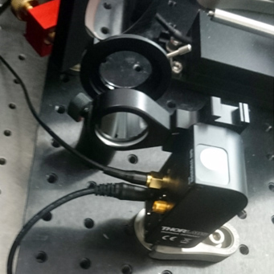
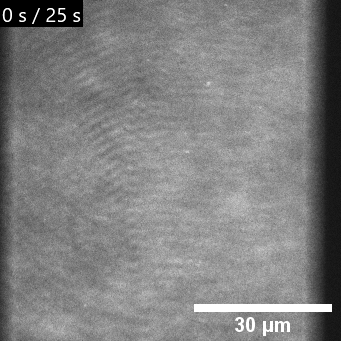
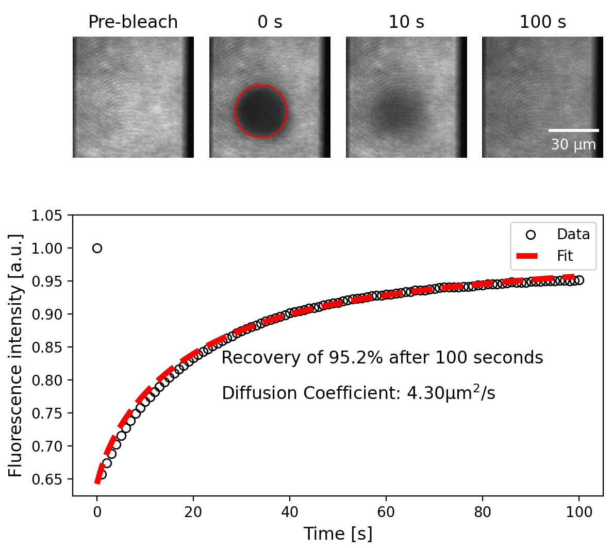
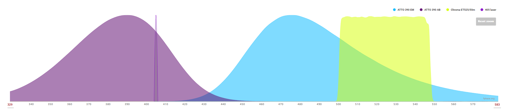

For fluorescence recovery after photobleaching (FRAP) experiments, a lens is flipped into the optical path, changing the beam from collimated to focused in the sample plane.


Left: : FRAP lens in a flip-mount for photobleaching experiments. Middle:
The mobility of a supported lipid bilayer can be estimated by adding a small percentage of fluorescent lipids and
observing the fluorescent recovery after a photobleching (FRAP) measurement. Right:
FRAP experiment on a supported lipid bilayer. Fit based on Soumpasis, Theoretical analysis of fluorescence photobleaching recovery experiments,
Biophysical Journal 1983
Fluorescent labeling of the bilayer
The dye ATTO390 is efficiently excited at 405nm and has a large stokes shift with an emission spectrum extending into the standard 'GFP' filter set range (525/50nm).
By adding a small percentage of ATTO390 fluorescently labeled lipids in our supported lipid bilayer, we can asses the bilayer quality directly while still having three channels available for imaging reconstituted molecules.
First seen in Carbone et al., Reconstitution of TCR-mediated segregation of CD45, PNAS 2017
Fig: : Absorption and Emission of ATTO-390 and the overlap with standard 'GFP' filter set. (fpbase.org)
{kind=link}
{kind=link}
{kind=link}
{kind=link}